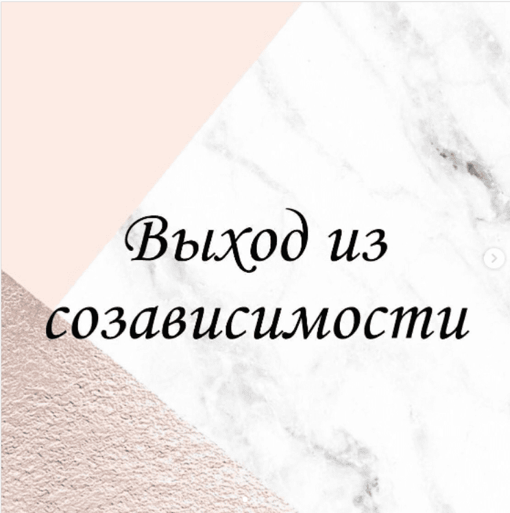
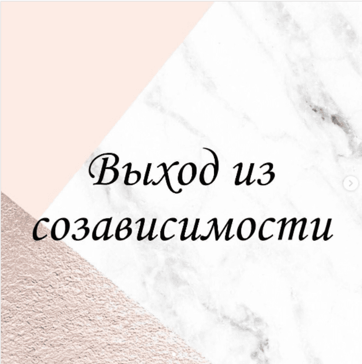

Приветствую Вас на моём сайте! Меня зовут Ирина Дан.
Я практикующий психолог, работаю в интегративном подходе и специализируюсь в когнитивно-поведенческой психотерапии.
Я помогу вам разобраться в проблемах связанных с кризисами и непониманием в личных отношениях в парах, с пожилыми родителями, детьми и подростками.
А так же апатией, тревожностью, паническими атаками, депрессивными состояниями.
Если Вы зашли на мой сайт, значит у вас возникла мысль обратиться к психологу.
Навалился груз проблем и не знаете, как справляться?
Не откладывайте. Не ждите, когда этот ком Вас накроет!
Чем раньше вы начнете делать шаги по изменению свой жизни, тем быстрее и дольше она будет дарить Вам радость и удовольствие!

 
Апатия, тревожность, депрессивные состояния
Найти и устранить причины, исцелиться, пройти психологическую реабилитацию
Отношения взрослых детей с пожилыми родителями
Сепарация от родителей, отстаивание своих психологических границ
Семейная психология
Созависимость, семейные кризисы, угасание чувств

Выстраивание отношений с детьми
Понимание истоков поведения детей. Налаживание отношений с детьми в семье

Самооценка, уверенность
Начать творить свою жизнь, выстраивание карьеры и самореализации. Полюбить себя. Жить в удовольствие
Страхи, панические атаки
Найти источник и причину, перестать бояться и начать двигаться вперед
Психологическое консультирование онлайн
Сейчас мир очень интенсивно меняется, а вместе с ним меняются и наши потребности. Пандемия и мобильность внесли коррективы в работу психолога и клиента, выведя консультирование в онлайн формат, тем самым в некоторых аспектах значительно облегчив коммуникацию.
Вот лишь некоторые плюсы онлайн-формата:
- Можно получить консультацию, не поднимаясь со своего стула. Это особенно важно для людей с ограниченной подвижностью, или мам с грудными малышами.
- Можно получить консультацию психолога, даже находясь за тысячи километров от него – достаточно иметь интернет-соединение, веб-камеру, и программу для связи. Это особенно важно для часто переезжающих людей или жителей небольших городов, где просто нет психологов-консультантов хорошего уровня.
- Можно общаться с психологом, находясь в привычной комфортной обстановке.
- Можно не тратить время на дорогу, а использовать его на иные полезные дела.
При всём этом качество работы сохраняется, результаты достигаются.
ИНДИВИДУАЛЬНОЕ КОНСУЛЬТИРОВАНИЕ И НЕМЕДИЦИНСКАЯ ПСИХОТЕРАПИЯ
СЕМЕЙНОЕ И ПАРНОЕ КОНСУЛЬТИРОВАНИЕ И НЕМЕДИЦИНСКАЯ ПСИХОТЕРАПИЯ
ИНДИВИДУАЛЬНАЯ КОНСУЛЬТАЦИЯ ПО ВОПРОСАМ ДЕТСТКОЙ ПСИХОЛОГИИ
ТЕСТИРОВАНИЕ И ПСИХОДИАГНОСТИКА ВЗРОСЛЫХ И ПОДРОСТКОВ
ГРУППОВАЯ РАБОТА (группы психологической поддержки и психотерапевтические группы)
СЕАНСЫ ТЕЛЕСНО-ОРИЕНТИРОВАННОЙ ПСИХОТЕРАПИИ (проводятся только очно в зависимости от локации моего нахождения)